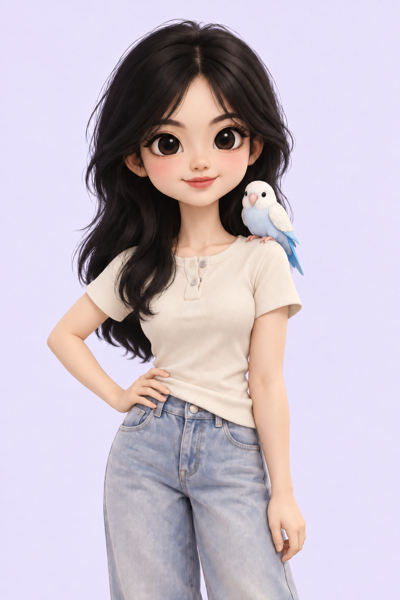
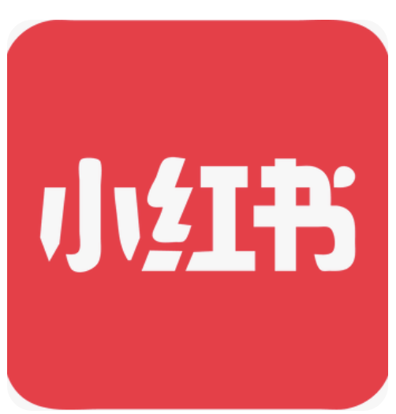

TECH MARKETER. CREATOR. EXPLORER.
Hi, I’m
Chloe
Exploring the world through
food, stories, and technology.
I connect AI, content, and growth — with a little curiosity and a feathered sidekick.
Welcome to my world
A good meal. A new place. An idea worth exploring.
Curiosity is
my common thread.
I’m Chloe — a tech marketer, content creator, and enthusiastic collector of little discoveries.
I enjoy turning new technology into stories people connect with. Away from work, I’m exploring somewhere new, finding my next favorite meal, or hanging out with my bird.
A FEW PLACES THAT SHAPED ME
Carnegie Mellon UniversityTepper School of Business · M.S. in Management
Shanghai Jiao Tong UniversityB.A. in English · Minor in Communication
Where stories
meet growth.
Connecting products with people.
Learning by making things happen.
Good food.
Better stories.

Two little corners of RedNote.
A lot of everyday discoveries.
Original account screenshots. Follower and engagement counts are snapshots, not live totals.
A curious human.
An AI-powered toolkit.
I use AI to explore ideas, create content, and make everyday work a little simpler. I bring the direction, judgment, and finishing touches.
MY EVERYDAY TOOLKIT
Tools I reach for.
This corner of the internet is part of the experiment, too.
Imagined by me. Built with AI.
Something
on your mind?
A new idea, a good conversation,
or a food recommendation — I’m all ears.